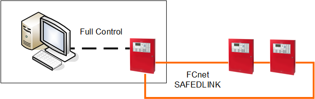
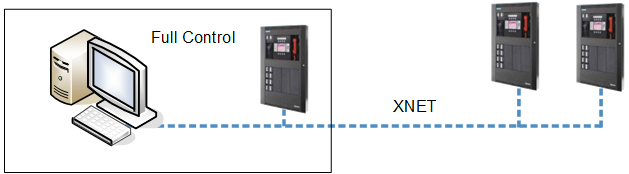
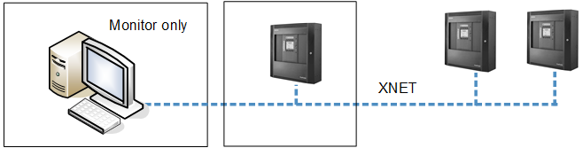

Using Off-the-Shelf Computers (BSIU) for Management Station in UL Fire or Fire-Voice Systems
The following diagram shows applications examples of the allowed architectures with off-the-shelf computers.
1 – Full Control Management Station in UL Fire Only Systems
The management station can have full control of the Fire only system if it is collocated in the same room with a Fire panel.
If the Fire system is a network of multiple fire panels, the colocated fire panel must be a Global Fire panel.

2 – Full Control Management Station in UL Fire or Fire-Voice Systems
The management station can have full control of the Fire-Voice system if it is collocated in the same room with a Fire-Voice panel.
If the Fire-Voice system is a network of multiple Fire-Voice panels, the collocated panel must be a Global Fire-Voice panel with a Global Voice Command Station linked to Desigo CC.

NOTE:
Unlike UL 864 9th edition, UL 864 10th ed. norms require RGD for Fire-Voice control.
3 - Monitor only Management Station in UL Fire or Fire-Voice Systems
If the management station computer is not located in the same room with the Fire or Fire-Voice panel (figure 3 below), it could only be used for view only. Full control is not allowed.

NOTE:
Unlike UL 864 9th edition, UL 864 10th ed. norms always require that management computer has the associated a Global Voice Command Station in the same room.
This also applies to Comark hardware. With any type of computer hardware, non-colocated management stations can only monitor a Fire-Voice network.